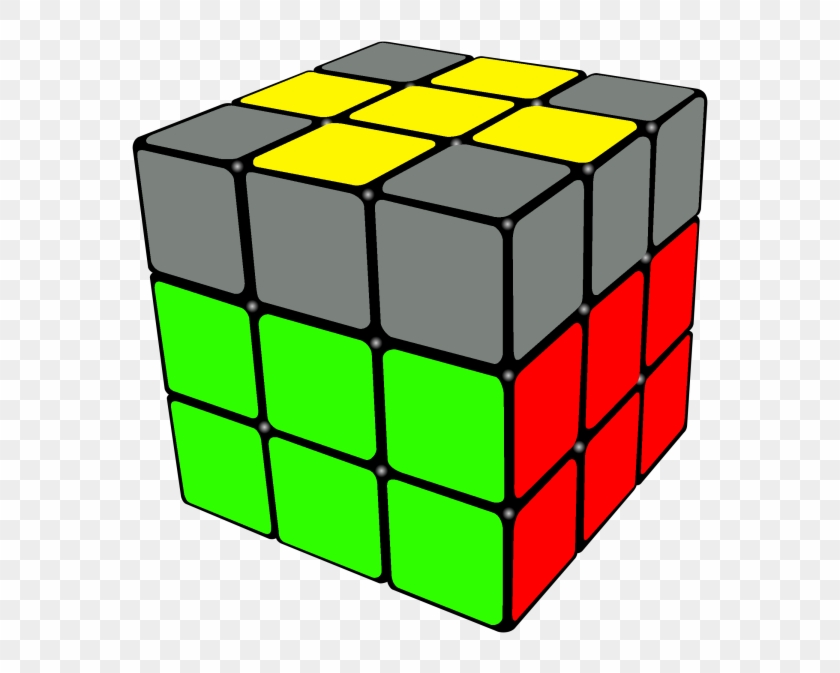

Next, we're going to solve the yellow cross.
After the end of this step, your cube will look something like this. You will have the yellow cross solved and both the first and middle layers will still be solved.
If you've already got the yellow cross solved which is basically what we did with the white cross at the beginning except you do not need the side colours to match, so if you got this solved already then you can skip what I say and go to step 5. But if you don't have that, then you can read this part now. So if you don't have a yellow cross you've either got a line, inverted L or dot.
This is a dot case. You can see there is a yellow dot in the centre and no yellow edge pieces facing up.
This is a line case. You can see that there are 2 yellow edge pieces facing up making a line.
This is an inverted L case. You can see that there are 2 yellow edge pieces facing up making an inverted L shape.
So if you have a dot just do this algorithm, F U R U’ R’ F’, I found this algorithm easy to remember because you can say fur urf and that spells the algorithm out, so if you did that you would get the line case. Make sure you hold it horizontally and do the same algorithm, fur urf, F U R U’ R’ F’. Now we got the inverted L, make sure we're holding it in the top left and then do the same algorithm, F U R U’ R’ F’ and then you'll get the yellow cross, so if you didn't start with a dot, don't worry you can just do the same algorithm with either the horizontal bar or the inverted L. If you have the inverted L, make sure you hold the cube so that the L is in the top left corner just like in the example image.